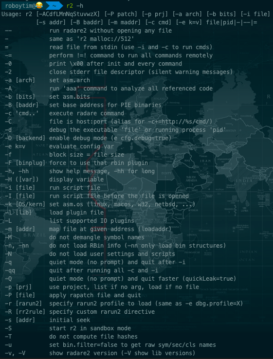
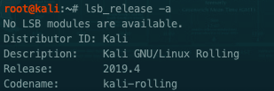
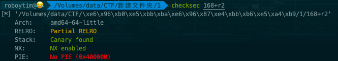
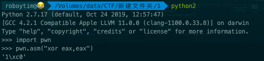
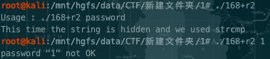
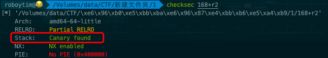
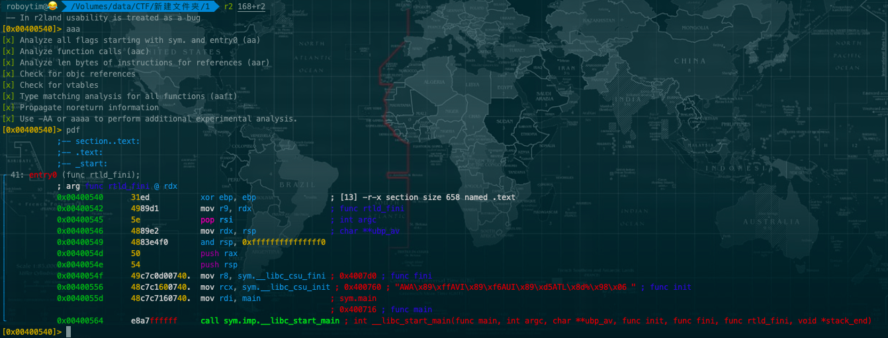
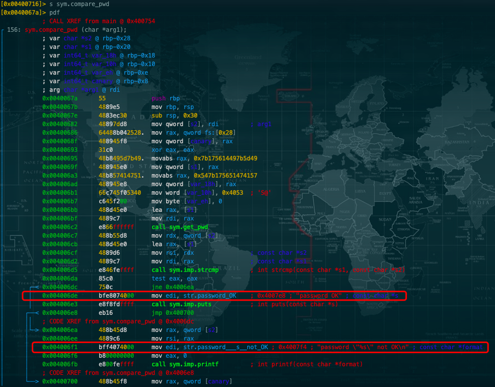
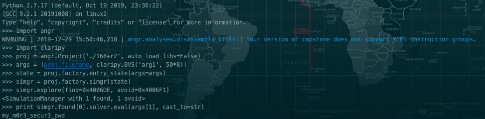

逆向工程之密码分析
r2 简单 逆向工程
描述
请分析附件中的程序，密码即为flag。
附件
解题步骤：
1.既然是逆向工程，所以可以使用IDA、r2之类的工具。这里我们还是按照题目中说的r2吧。
radare2安装
radare2介绍
radare2是一个开源的逆向工程和二进制分析框架，它的强大超出你的想象，包括反汇编、分析数据、打补丁、比较数据、搜索、替换、虚拟化等等，同事具备超强的脚本加载能力，它可以运行在几乎所有主流的平台（GNU/Linux, .Windows *BSD, iOS, OSX, Solaris…）并且支持很多的cpu架构以及文件格式，我认为所有它的这些特征恰好能表达出一个意思–那就是给予你的使用以极大的自由.
radare2工程是由一系列的组件构成，这些组件可以在 radare2 界面或者单独被使用–比如我们将要了解的rahash2, rabin2, ragg2三个组件，所有这些组件赋予了 radare2 强大的静态或动态分析、十六进制编辑以及溢出漏洞挖掘的能力.
老规矩，还是先来安利一下kali linux，系统中会自带r2，免安装。
$ git clone https://github.com/radare/radare2.git
$ cd radare2
$ ./sys/install.sh
也可以通过上述三个命令进行手动安装。安装好之后还是先用r2 -h来检查一下能否正常使用。

虽说是这个东西拿来玩的，玩也要玩的全面一点嘛，所以直接把 checksec 这些个常用工具全搞定吧。
pwntools安装

这个版本的kali中并没有checksec工具，所以手动在mac上安装吧。
mac安装pwntools
#安装pwntools
brew install pwntools
#安装bintuils 二进制工具
brew install https://raw.githubusercontent.com/Gallopsled/pwntools-binutils/master/osx/binutils-amd64.rb
命令执行完之后,我们要导入我们pwntools的包放到环境变量。
- /usr/local/Cellar/pwntools/3.12.2_1/libexec/lib/python2.7/site-packages
- 在系统默认安装包的site-packages写个.pth文件写入上面的地址就可以了
之后就直接可以使用命令了。

再测试一下python的pwn模块
python2
import pwn
pwn.asm("xor eax,eax")

出现'1\xc0' 说明安装成功了。
kali安装pwntools
git clone https://github.com/Gallopsled/pwntools
cd pwntools
python setup.py install
安装capstone
git clone https://github.com/aquynh/capstone
cd capstone
make
make install
装好后检验一下命令是否可用，方法同mac。
2.工具安装成功之后我们就开始吧
先来了解一下程序，直接执行。

这里我们先用checksec来检测elf运行于哪个平台，开启了什么安全措施，如果用gcc的编译后，默认会开启所有的安全措施。

- 【1】RELRO：RELRO会有Partial RELRO和FULL RELRO，如果开启FULL RELRO，意味着我们无法修改got表
- 【2】Stack：如果栈中开启Canary found，那么就不能用直接用溢出的方法覆盖栈中返回地址，而且要通过改写指针与局部变量、leak canary、overwrite canary的方法来绕过
- 【3】NX：NX enabled如果这个保护开启就是意味着栈中数据没有执行权限，以前的经常用的call esp或者jmp esp的方法就不能使用，但是可以利用rop这种方法绕过
- 【4】PIE：PIE enabled如果程序开启这个地址随机化选项就意味着程序每次运行的时候地址都会变化，而如果没有开PIE的话那么No PIE (0x400000)，括号内的数据就是程序的基地址
- 【5】FORTIFY：FORTIFY_SOURCE机制对格式化字符串有两个限制(1)包含%n的格式化字符串不能位于程序内存中的可写地址。(2)当使用位置参数时，必须使用范围内的所有参数。所以如果要使用%7$x，你必须同时使用1,2,3,4,5和6。
Stack: Canary found
canary简介
我们知道，通常栈溢出的利用方式是通过溢出存在于栈上的局部变量，从而让多出来的数据覆盖ebp、eip等，从而达到劫持控制流的目的。然而stack canary这一技术的应用使得这种利用手段变得难以实现。canary的意思是金丝雀，来源于英国矿井工人用来探查井下气体是否有毒的金丝雀笼子。工人们每次下井都会带上一只金丝雀如果井下的气体有毒，金丝雀由于对毒性敏感就会停止鸣叫甚至死亡，从而使工人们得到预警。这个概念应用在栈保护上则是在初始化一个栈帧时在栈底设置一个随机的canary值，栈帧销毁前测试该值是否“死掉”，即是否被改变，若被改变则说明栈溢出发生，程序走另一个流程结束，以免漏洞利用成功。
可以看到Stack一行显示Canary found。此外，在函数栈帧初始化时也会在栈上放置canary值并且在退出前验证.
很显然，一旦我们触发栈溢出漏洞，除非能猜到canary值是什么，否则函数退出的时候必然会通过异或操作检测到canary被修改从而执行stack_chk_fail函数。因此，我们要么想办法获取到canary的值，要么就要防止触发stack_chk_fail，或者利用这个函数。
开启canary后就不能直接使用普通的溢出方法来覆盖栈中的函数返回地址了，要用一些巧妙的方法来绕过或者利canary本身的弱点来攻击
【1】利用canary泄露flag，这个方法很巧妙的运用了canary本身的弱点，当stack_check_fail时，会打印出正在运行中程序的名称，所以，我们只要将libc_argv[0]覆盖为flag的地址就能将flag打印出来。
【2】利用printf函数泄露一个子进程的Canary，再在另一个子进程栈中伪造Canary就可以绕过Canary的保护了。
上面信息来源于百度，反正我是看不懂。。。大概意思就是有保护措施，需要绕过canary才能进行破解。
先不管这么多，直接上r2 168+r2。
pdf命令来查看汇编代码

s main(s表示seek, 跳转到main)
s sym.compare_pwd

至此，我们就找到了程序的两个入口，0x004006de表示密码验证通过，0x004006f1表示密码验证失败。
这时候就该上另外一个神器了，angr。
angr介绍
angr用于逆向工程中进行二进制分析的一个python框架
符号执行 （Symbolic Execution）是一种程序分析技术。其可以通过分析程序来得到让特定代码区域执行的输入。使用符号执行分析一个程序时，该程序会使用符号值作为输入，而非一般执行程序时使用的具体值。在达到目标代码时，分析器可以得到相应的路径约束，然后通过约束求解器来得到可以触发目标代码的具体值。
angr安装
pip install angr
之后就可以编写angr脚本了

代码和注释如下：
#!/usr/bin/env python2
#_*_ coding:UTF-8 _*_
#导入angr包
import angr
#这个模块用来来定义抽象的数据
import claripy
#加载程序，建立一个angr工程
proj = angr.Project('./168+r2', auto_load_libs=False)
#claripy.BVS('arg1', 50*8) 这一句即是用claripy这个模块的BVS函数来创建一个指定长度的抽象数据，BVS函数要求两个参数，第一个参数为变量名，第二个参数为变量长度。
args = [proj.filename, claripy.BVS('arg1', 50*8)]
#用于指明程序在初始运行时的状态,默认就是程序的入口地址,另外有函数blank_state，可用于指定程序起始运行地址通过给定参数addr的值
state = proj.factory.entry_state(args=args)
#从给定状态创建了一个模拟器，进行符号执行
simgr = proj.factory.simgr(state)
#使用explore执行模拟器，find和avoid用来作为约束条件。
#find即要产生ok的状态，而避免close的状态
#avoid规避产生not ok的状态。
simgr.explore(find=0x4006DE, avoid=0x4006F1)
#sm.found[0].solver 用于存储状态的解，而eval函数则输入参数的值
print simgr.found[0].solver.eval(args[1], cast_to=str)
这样就获取到了对应的password